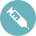

Заочная консультация с зарубежными специалистами,
возможность
получить экспертное мнение по определенному заболеванию
и методам его лечения в Республике Беларусь.
Белоснежная улыбка – главный секрет успеха.
Предлагаем профессиональное
отбеливание зубов со скидкой 15%.
Безопасное осветление эмали на 5-10 тонов по шкале Вита.
Сияйте и улыбайтесь чаще
Специальное предложение
до конца октября
Ботокс – универсальная оздоровительная процедура для волос. Нет больше ломкости,
посеченных концов, чрезмерной пушистости. Цените ваше время и будьте красивыми!
Заполните форму ниже (все поля обязательно) и мы свяжемся с Вами в течении 15
минут
О нас
Медицинское направление стало одним из важнейших направлений туризма, и
GlobalMedTour находится на рынке медицинских услуг для иностранных пациентов практически с самого начала,
являясь одним из первопроходцев в данной области.
Сегодня GlobalMedTour – это уникальная медицинская платформа, объединяющая лучшие медицинские клиники,
санатории, центры врачебной косметологии Республики Беларусь в единую медицинскую сеть.
Преимущества
Лучшее решение
медицинской проблемы
Гарантия того, что пациент получит самое лучшее лечение своего
заболевания, будут применены наиболее передовые методики. Консультированием и лечением займутся
профессионалы высокого класса
Организация лечения
от «А» до «Я»
Подготовка документов, встреча в аэропорту, заселение, страхование,
сопровождение, перевод, а также максимальная оптимизация лечебного процесса, позволяющая уложиться
в максимально сжатые сроки, сократив временные и финансовые траты пациента
Гарантия конфиденциальности
Гарантия соблюдение строгой конфиденциальности во всем, что связано
с пациентами. Все сведения могут быть предоставлены третьим лицам только
с письменного согласия пациентов GlobalMedTour
Низкие цены на обслуживание
Одним из главных преимуществ лечения
в Республике Беларусь являются доступные цены при высоком качестве обслуживания
Заочная консультация
с зарубежными специалистами
Возможность получить экспертное мнение специалиста по определенному заболеванию
и методам его лечения
Индивидуальный подход
Учёт ваших пожеланий, предпочтений
и уникальности ситуации при планировании визита для лечения и оздоровления
Наши услуги

Анализы
Общие анализы
Биохимические исследования
Гормональные исследования
Иммунологические исследования
Коагулограмма
ПЦР-анализы
Терапевтическая стоматология
Ортопедическая стоматология
Хирургическая стоматология
и челюстно-лицевая хирургия
CAD/CAM технологии
Рентгендиагностика зубов
Детская стоматология
Хирургия
Гинекологические операции
Маммология
Общая хирургия
Ортопедические операции
Нейрохирургия
Отоларингологические операции
Офтальмологические операции
Пластическая хирургия
Флебологические операции
Лазерное лечение СО2 лазером
Санаторный отдых
Беларусь по праву известна традициями санаторно-курортного лечения, она завоевала популярность
среди путешественников из стран СНГ и Европы. Для того чтобы определиться в многообразии
санаториев, у вас есть надёжный координатор GlobalMedTour.